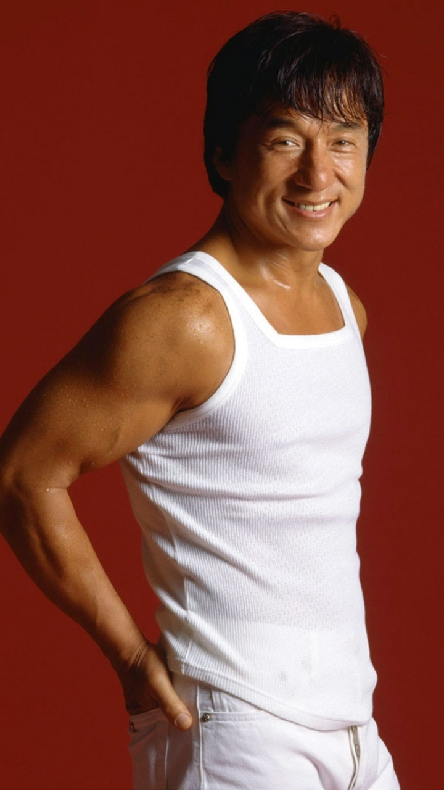

|  | |
| Name | Jackie Chan |
|---|---|
| Born | Chang Kong-sang 7 April 1954 |
| Spouse | Joan Lin |
| Children | 2 including Jaycee Chan |
| Occupation | Martial artist. Actor. filmmaker. Action . Choregrapher. Singer. Stunt Director and Performer |
| Website | jackiechan |
| Genres | Cantopop, Mandopop, Hong Kong English Pop and Jpop |
| Yearly Active | 1962-Present |
Chan was born on 7 April 1954 in British Hong Kong as Chan Kong-sang (Chinese: 陳港生; lit. 'Chan the Hong Kong-born'[2][3]) to Charles and Lee-Lee Chan, political refugees from the Chinese Civil War. In circa 1937, Chan's father, originally named Fang Daolong, briefly worked as a secret agent for Lieutenant General Dai Li, the chief spy in Kuomintang-ruled China.[5] For fear of being arrested by the communist government, Chan's father fled to British Hong Kong in the 1940s and changed his surname from Fang to Chan. Chan was his wife Chan Lee-lee’s surname. Chan discovered his father's identity and changed his Chinese name to Fang Shilong (房仕龍) in the late 1990s, the name he would have been named according to his kin's genealogy book. Chan spent his formative years within the grounds of the French consul's residence in the Victoria Peak, British Hong Kong, as his father worked as a cook there.[25] Chan attended the Nah-Hwa Primary School on Hong Kong Island, where he failed his first year, after which his parents withdrew him from the school. In 1960, his father emigrated to Canberra, Australia to work as the head cook for the American embassy, and Chan was sent to the China Drama Academy, a Peking Opera School run by Master Yu Jim-yuen.[25][26] Chan trained rigorously for the next decade, excelling in martial arts and acrobatics.[27] He eventually became part of the Seven Little Fortunes, a performance group made up of the school's best students, gaining the stage name Yuen Lo (元樓) in homage to his master. Chan became close friends with fellow group members Sammo Hung and Yuen Biao, and the three of them later became known as the Three Brothers or Three Dragons.[28] After entering the film industry, Chan along with Sammo Hung got the opportunity to train in hapkido under the grand master Jin Pal Kim, and Chan eventually attained a black belt.[29] As a martial artist, Chan is also skilled in multiple forms of Kung-fu.[30] He is also known to have trained in other martial art forms such as Karate, Judo, Taekwondo, and Jeet Kun Do Chan joined his in Canberra, Australia in 1971, where he briefly attended Dickson College and worked as a construction worker.[32] A fellow builder named Jack took Chan under his wing, thus earning Chan the nickname of "Little Jack," later shortened to "Jackie", which has stuck with him ever since.
He began his film career by appearing in small roles at the age of five as a child actor. At age eight, he appeared with some of his fellow "Little Fortunes" in the film Big and Little Wong Tin Bar (1962) with Li Li-Hua playing his mother. The following year, the young actor appeared in extras of Yen Chun's 1964 film Liang Shan Po and Chu Ying Tai and had a small role in King Hu's 1966 film Come Drink with Me.In 1971, after an appearance as an extra in another kung fu film, A Touch of Zen, Chan was signed to Chu Mu's Great Earth Film Company.[34] Chan appeared in the Bruce Lee Fist of Fury (1972), both as an extra and as a stunt double for the Japanese villain Hiroshi Suzuki (portrayed by Riki Hashimoto), particularly during the final fight scene where Lee kicks him and he flies through the air.Chan again appeared in another Bruce Lee film, Enter the Dragon (1973), as a minor henchman who gets killed by Lee's character. Sammo Hung helped Chan get minor roles in both of the Bruce Lee films.Chan also worked as a martial arts choreographer for John Woo's The Young Dragons (1974).
| Year | Title | Director | Co-Stars | Role |
|---|---|---|---|---|
| 1978 | Drunken Master | Woo Ping Yuen | Yuen Siu Tien | Main Actor |
| 1998 | Rush Hour | Michel Mina | Chric Tucker | Main Actor |
| 2001 | The Accidental Spy | Teddy Chan | Eric Tsang | Main Actor |
| 2003 | Shanghai Knights | David Dobkin | Fann Wong | Main Actor |
| 2010 | The Karate Kid | Mohan Kapoor | Jaden Smith | Main Actor |
| 2010 | The Spy NexDoor | Brian Levant | Alina Foley | Main Actor |
| 2015 | Dragon Blade | Daniel Lee | John Cusack | Main Actor |
| 2017 | The Foreigner | Martin Campbell | Katie Leung | Main Actor |